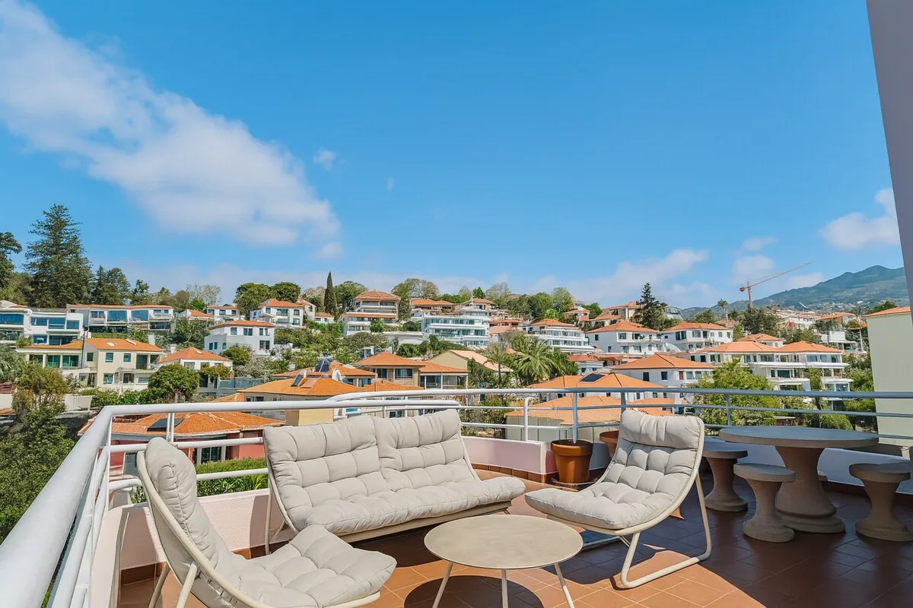
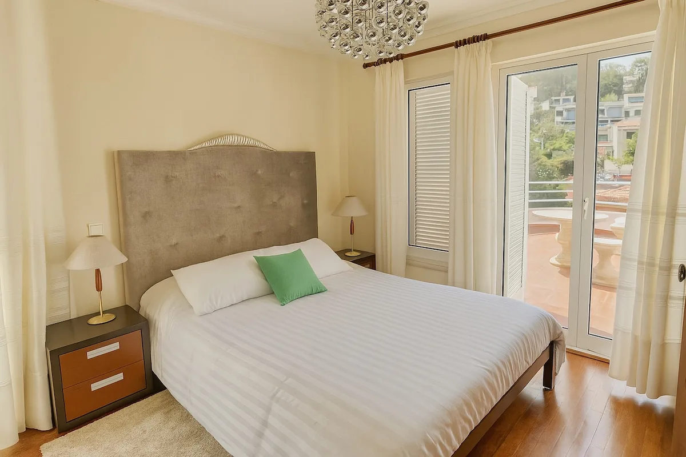
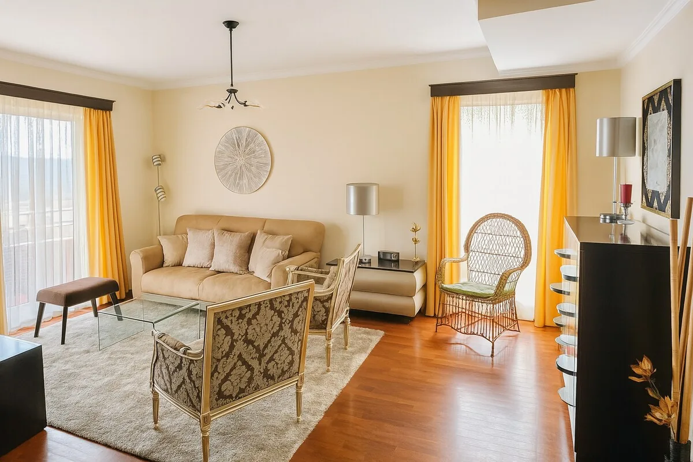
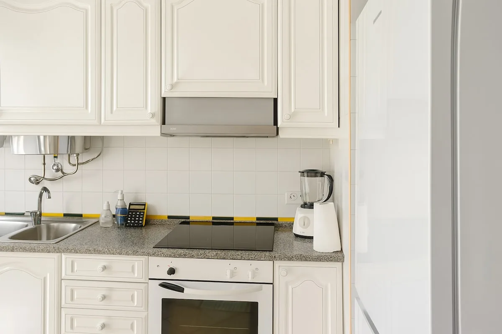
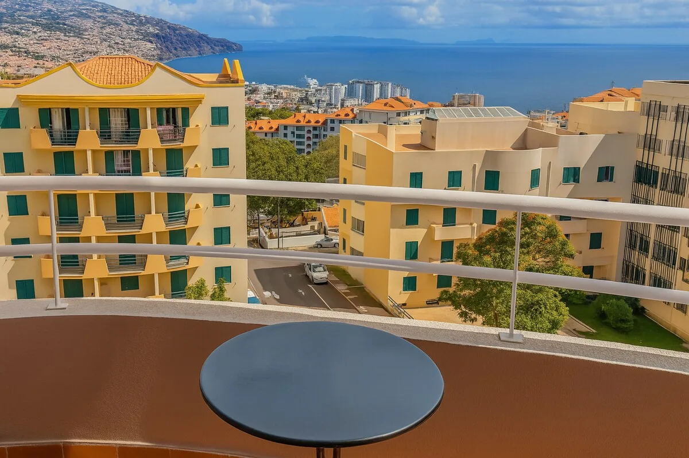
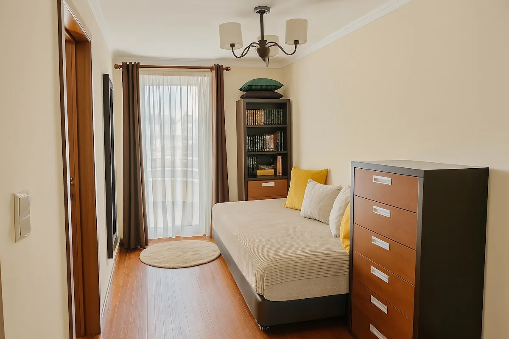
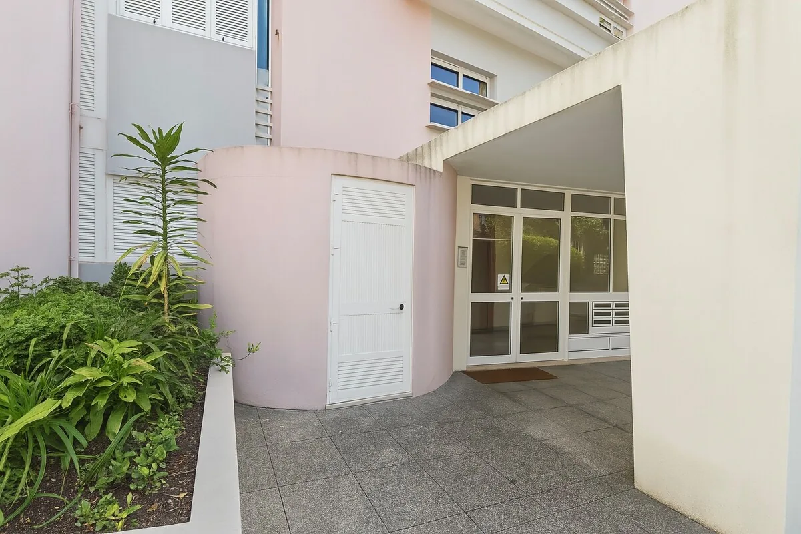

DanTel Aviv-Yafo, Israel
We loved it, great apartment. Natalia and Hugo were super helpful. 10/10
Barreiros, Funchal



Show all 15 photos








A two-bedroom apartment in Barreiros with two large balconies and an open view across Funchal bay. It sleeps three: a double bedroom, a second bedroom, and a sofa bed in the living room. The building has a lift, free street parking sits close by, and we meet you at the door with the keys.
One is wide enough for loungers and a table; the other catches the morning sun for breakfast.
Guests keep saying the same thing: it is calm. Cafés, shops and buses are a short walk away.
Tell us your arrival time and we hand over the keys in person and show you around.
23 amenities are listed in full on Airbnb.
We loved it, great apartment. Natalia and Hugo were super helpful. 10/10
We had a really lovely stay in the apartment. The apartment was incredibly clean, tidy, and well-maintained, and everything worked as it should. We quickly felt at home and were very pleased with our stay. The host was also kind and helpful.
We highly recommend the apartment and would definitely like to stay here again! ☀️
Vi havde et rigtig dejligt ophold i lejligheden. Lejligheden var utrolig ren, pæn og velholdt, og alt fungerede, som det skulle. Vi følte os hurtigt hjemme og var meget tilfredse med vores ophold. Værten var også sød og hjælpsom.
Vi kan varmt anbefale lejligheden og ville bestemt gerne bo her igen! ☀️
We had a wonderful stay! The apartment was very clean, tidy, and well maintained, with everything we needed for a comfortable stay.
The host was very helpful and always available whenever we had any questions, which made everything easy and stress-free.
And the highlight was definitely the incredible ocean view — absolutely beautiful and something we enjoyed every single day. A great place to stay in Madeira, and we would happily come back again. Highly recommended!
What a beautiful place on an indescribably beautiful island.
The views were pristine, and the flat was clean, beautifully decorated and incredibly spacious — almost too big for the two of us, but we’re certainly not complaining! It was always just a short drive from great restaurants and the beautiful Funchal city centre.
If you have a car, don’t worry about parking — we always managed to find somewhere nearby.
Our only regret is that we didn’t get to spend more time in the flat and really take it all in, but Madeira simply has so much to see and do!
We really hope to return one day and once again sit on that balcony looking out over that incredible sea and city view.
Book this place — you won’t regret it!
Thank you both for a wonderful stay.
Luke and Maria.
Amazing location with a great view. We loved the place and stayed for a week. Natalia and Hugo are great hosts and communicate promptly about everything. We recommend car if you stay here. We highly recommend this lovely place.
Great stay in Madeira in this very nice, spacious, clean Airbnb with a great view of Funchal.
Our hosts were extremely thoughtful and helpful, and we were happy to communicate with them (in French!).
We also hired Chifbay for a fantastic boat trip and a memorable sunset.
Thanks again for this exceptional vacation!
Super séjour à Madère dans cet Airbnb très agréable, spacieux, propre et avec une super vue sur Funchal.
Nos hôtes ont été hyper attentionnés et serviables, et nous avons pu communiquer avec eux (en français !) avec grand plaisir.
Nous avons également fait appel aux services de Chifbay pour un tour en bateau fantastique, et un coucher de soleil mémorable.
Merci encore pour ces vacances exceptionnelles !
Beautiful location, spacious apartment and very nice view.
Mooie locatie, ruim appartement en zeer mooi uitzicht.
Natalia and Hugo were wonderful hosts. They communicated clearly and were very responsive. The apartment was ideally located in an area where the locals lived; exactly what we wanted. Yet it was easy access to walk into the Center of Funchal. Parking was a non issue at the location as there was always plenty of street parking available regardless of the time of day. The view was wonderful and we spent every morning enjoying coffee on the terrace overlooking the ocean. Great value. Would highly recommend.
Hugo & Natalia were great hosts, nice apartment, beautiful sea view and a nice central location.
Hugo & Natalia waren top hosts, mooi appartement, prachtig uitzicht op zee en een fijne centrale locatie.
We had a great stay
The apartment was conveniently located, right in the center, with plenty of parking options nearby. The view was absolutely splendid.
L’appartement était idéalement situé, en plein centre, avec de nombreuses possibilités de stationnement à proximité. La vue était absolument splendide.
We spent a week in this apartment and enjoyed it. Good location, nice view, excellent communication and all the things you might need. Definitely recommended.
Highlights include the terraces and the views. There are also small shops nearby that are very helpful.
Les points forts sont les terrasses et les points de vue. Il y a aussi les petits commerces à proximité qui dépannent bien.
Pros - beautiful view from balcony, one sheltered from bad weather, there was always parking available. Natalia’s communication was very responsive and friendly.
Cons - we found mattress hard and uncomfortable and so used a spare duvet to make it softer, there was only one electric heater so difficult to dry things (we had bad weather so couldn’t dry things on balcony), at night the bedroom light bulbs dimly glowed even though switch was off (apparently might be common in Madeira)
Loved it here! Great to be away from the tourist hotspots and feel included in a lovely community. Great coffee shops etc!
Also got fit walking up and down the hill. Did occasionally resort to a bus or taxi - both very cheap!
Many Thanks for a great stay!
Great place to stay, overlooking the entire bay, we saw the most beautiful New Year's Eve fireworks here!
很棒的住宿，可以俯瞰整个海湾，我们在这里看到了最美的跨年烟花！
Lovely flat with views of the sea and mountains. Everything needed was there. Would highly recommend!
Great place to stay, friendly hosts, good location and lovely outside space
Peaceful, clean, luxurious and relaxing. Couldnt have asked for a better place to stay. Made our visit to madeira feel comfortable and relaxed. Will be coming again! Thank you!
Exceptionally clean, spacious and well equipped apartment. The balcony off the living room offers stunning views over Funchal to the ocean. The large outdoor terrace is a standout amenity.
I am more than delighted with my stay at Nathalia and Hugo's.
The apartment is in a great location, clean and spacious.
The place is quiet and peaceful.
The apartment is beautifully decorated, small touches of authenticity make up the charm of the apartment, which makes it warm.
Easy access, ideal with children or a person with reduced mobility.
I had a very nice week with my father.
I would highly recommend it, and I am in a hurry to return to feel at home again.
Thanks again 🌺
See you soon
Andréa and her Dad
Je suis plus que Ravie de mon séjour chez Nathalia et Hugo.
L’appartement est idéalement situé, propre et spacieux.
L’endroit est Calme et paisible.
L’appartement est magnifiquement décoré, des petites touche d’authenticité font tout le charme de l’appartement, cela je rends chaleureux.
Facile d’accès, idéal avec des enfants ou une personnalité à mobilité réduite.
J’ai passé une semaine très agréable avec mon père.
Je recommande vivement, et je suis pressé de revenir pour m’y sentir de nouveau chez moi.
Encore merci 🌺
À très vite
Andréa et son Papa
Large terrace and beautiful views
The apartment was very large and clean, there was everything you needed. The large terrace was just great overlooking the sea and Funchal. The kitchen was well equipped and you could even do laundry. Communication with Natalia was great, she always responded quickly, we could figure out check-in times and it was super easy. Plenty of parking available in the area, a small kiosk downstairs in the house and a great cafeteria nearby. On foot, it was about 30 minutes to Funchal, we also took the bus. It was a really great stay.
Unfortunately, there were many barking dogs in the area (for which the hostess can do nothing), but with earplugs it was no problem at night.
Das Apartment war sehr groß und sauber, es war alles vorhanden was man brauchte. Die große Terrasse war einfach nur toll mit Blick auf das Meer und auf Funchal. Die Küche war toll ausgestattet und man konnte sogar die Wäsche waschen. Die Kommunikation mit Natalia war großartig, sie hat immer schnell geantwortet, Check in Zeiten konnten wir uns ausmachen und war super einfach. Genug Parkplätze in der Gegend vorhanden, ein kleiner Kiosk unten im Haus und gleich in der Nähe eine tolle Cafeteria. Zu Fuss waren es ca. 30 min nach Funchal, wir sind auch mit dem Bus gefahren. Es war ein wirklich toller Aufenthalt.
Leider waren in der Gegend viele bellende Hunde (wofür die Gastgeberin ja nichts kann), aber mit Ohrenstöpsel war es kein Problem in der Nacht.
Where you will be
The circle shows the area. The exact address and the way in come with your booking.
Book straight here, and keep what Airbnb would have charged you on top.
Pick your dates